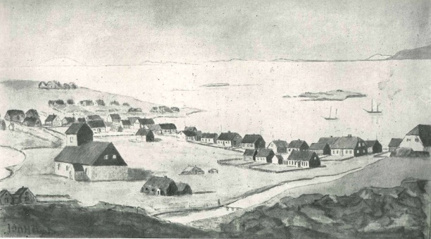

1799 – 1887
Mynd Jóns Helgasonar af Reykjavík árið 1836, trúlega máluð nálægt 1890. Lækjarkot sést lengst til vinstri á myndinni suðaustan við Dómkirkjuna. Efst á myndinni má sjá Hlíðarhús og torfbæi í Grjótaþorpi og við Vesturgötu. Lækjarkot var reist árið 1799 austast á Austurvelli. Runólfur forstjóri Innréttinganna bjó þar en drukknaði í Tjörninni 1811 "aðeins mjög lítið drukkinn" samkvæmt annálum. Meðal seinni ábúenda má nefna Þórð malakoff, sem var um margt sérkennilegur og bjó þar um 1870. Bærinn var rifinn árið 1887. Bærinn stóð þar sem nú er Lækjargata 10a sem er óbyggð lóð í dag. Fornleifauppgröftur árið 2015 sýndi ekki aðeins merki um bæinn Lækjarkot heldur einnig áður ókunnan landsnámsbæ.

Mynd eftir Jón Helgason af Reykjavík1836